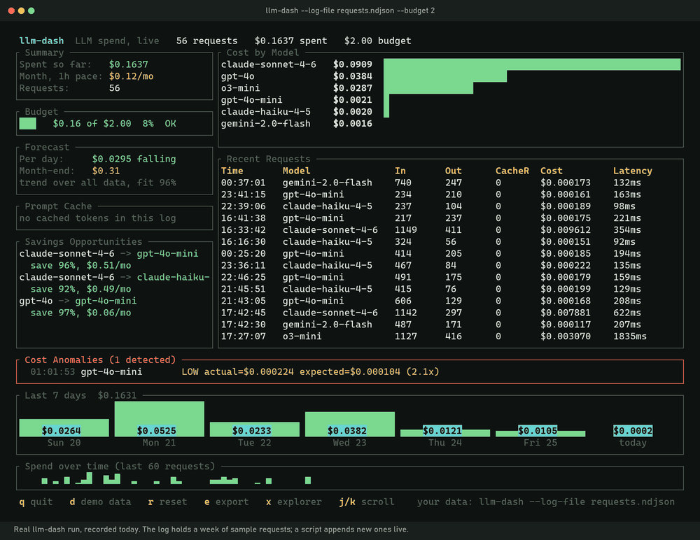
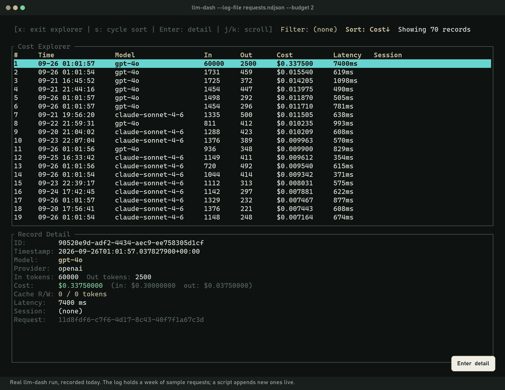

See what your AI model calls cost, live in your terminal, before the bill arrives.
Prices 83 models across Anthropic, OpenAI, Google, DeepSeek, Mistral and more. Runs on your machine. No account, no API key, MIT licensed.
irm https://raw.githubusercontent.com/Mattbusel/llm-cost-dashboard/master/install.ps1 | iexOr with Scoop: scoop bucket add mattbusel https://github.com/Mattbusel/scoop-bucket, then scoop install llm-dash
brew install mattbusel/tap/llm-dashNo Homebrew? curl -fsSL https://raw.githubusercontent.com/Mattbusel/llm-cost-dashboard/master/install.sh | sh
cargo binstall llm-cost-dashboardBuild from source instead: cargo install llm-cost-dashboard
Then run llm-dash --demo to look around with sample data.
Point it at a log your app writes to. Every new line is priced the moment it lands: the budget gauge fills, the per-model bars grow, and a call that costs far more than usual gets flagged.

No SDK and no proxy. llm-dash reads a plain text file with one line per model call.
Sample Claude, GPT and Gemini traffic, no setup.
$ llm-dash --demoHave your app append one JSON line per call.
{"model":"gpt-4o-mini",
"input_tokens":512,
"output_tokens":256,
"latency_ms":340}Set a monthly budget and keep it open.
$ llm-dash \
--log-file requests.ndjson \
--budget 50Everything fits on one screen and refreshes four times a second. Colors follow your terminal theme, and NO_COLOR turns them off.
x: sort every call by cost and open one to see its exact price.The explorer sorts every request by cost. The runaway prompt from the recording sits on top: 60,000 input tokens on gpt-4o, $0.30 of input and $0.0375 of output, 7.4 seconds.

The same data answers questions from the command line and exits. This is real output from llm-dash 1.2.2 on its built-in demo data.
$ llm-dash --demo --compare Multi-Provider Cost Comparison (83 models, 22/day requests, 730in/348out avg tokens) Model Monthly USD ministral-3b-2410 0.0285 llama-3.1-8b-instant 0.0425 amazon.nova-micro-v1:0 0.0490 gemini-1.5-flash-8b 0.0525 ... 79 more rows ... Cheapest: ministral-3b-2410 ($0.0285/mo) Most expensive: gpt-4.5-preview ($70.5870/mo) Spread: 2480x
$ llm-dash --demo --budget 50 --forecast Holt-Winters Cost Forecast (based on 20 records) Next hour: $0.005665 Next day: $0.1785 Next week: $3.13 Next month: $44.33 80% CI (next hour): [$0.000000, $0.013657] WARNING: forecasted monthly spend ($44.33) exceeds 80% of budget ($50.00)!
The compare table is trimmed to its model and monthly columns here; the full output also lists daily cost, cost per 1,000 requests and provider.